<!DOCTYPE html>
<html lang="pt-BR">
<head>
    <meta charset="UTF-8">
    <meta name="viewport" content="width=device-width, initial-scale=1.0">
    <title>II Simpósio IRAS e Stewardship — Exibição Contínua</title>
    <link href="https://fonts.googleapis.com/css2?family=Montserrat:wght@400;500;600;700;800;900&display=swap" rel="stylesheet">
    <style>
        :root {
            --blue:#003DA5; --blue-dark:#002855; --blue-light:#71C5E8;
            --gold:#C6A27C; --gold-light:#F7CEA7; --white:#FFF;
            --bronze:#CD7F32;
        }
        * { margin:0; padding:0; box-sizing:border-box; }
        html, body { width:100%; height:100%; overflow:hidden; background:#001a35; }
        body {
            font-family:'Montserrat',sans-serif; color:var(--white);
            cursor:none; user-select:none;
        }

        /* Progress bar */
        .progress {
            position:fixed; top:0; left:0; height:3px; z-index:100;
            background:linear-gradient(90deg,var(--gold),var(--gold-light));
            transition:width 0.3s linear;
        }

        /* Stage */
        .stage { position:relative; width:100%; height:100%; }

        /* Slide */
        .slide {
            position:absolute; inset:0; display:flex; align-items:center; justify-content:center;
            opacity:0; transform:scale(0.96); transition:opacity 0.8s ease, transform 0.8s ease;
            pointer-events:none;
        }
        .slide.active { opacity:1; transform:scale(1); pointer-events:auto; }

        /* Hex mesh background */
        .slide::before {
            content:''; position:absolute; inset:0; opacity:0.5;
            background-image:url("data:image/svg+xml,%3Csvg xmlns='http://www.w3.org/2000/svg' width='100' height='173'%3E%3Cpath d='M50 0 L100 29v58L50 116L0 87V29z' fill='none' stroke='rgba(113,197,232,0.10)' stroke-width='0.5'/%3E%3C/svg%3E");
            background-size:100px 173px;
        }

        /* Gradient overlays */
        .slide::after {
            content:''; position:absolute; inset:0;
            background:radial-gradient(ellipse at 20% 80%, rgba(0,61,165,0.35) 0%, transparent 55%),
                       radial-gradient(ellipse at 80% 15%, rgba(113,197,232,0.12) 0%, transparent 45%);
        }

        .slide-content { position:relative; z-index:2; text-align:center; padding:40px; width:100%; }

        /* Speaker / moderator slide */
        .person-photo {
            width:220px; height:220px; border-radius:50%; object-fit:cover;
            border:4px solid var(--gold); margin:0 auto 28px; display:block;
            box-shadow:0 0 60px rgba(198,162,124,0.35);
            animation:photoIn 0.9s ease-out;
        }
        @keyframes photoIn {
            0% { transform:scale(0.7); opacity:0; }
            100% { transform:scale(1); opacity:1; }
        }
        .person-role-label {
            font-size:0.8rem; letter-spacing:4px; text-transform:uppercase;
            color:var(--gold-light); font-weight:700; margin-bottom:10px;
        }
        .person-name {
            font-size:2.6rem; font-weight:900; margin-bottom:8px;
            letter-spacing:-0.5px; line-height:1.15;
        }
        .person-inst {
            font-size:1.05rem; color:var(--blue-light); margin-bottom:16px; font-weight:500;
        }
        .person-topic {
            font-size:1.1rem; color:var(--white); font-weight:600;
            background:rgba(255,255,255,0.08); display:inline-block;
            padding:10px 26px; border-radius:30px; border:1px solid rgba(255,255,255,0.15);
            white-space:pre-line; line-height:1.5;
        }

        /* Institutional slide */
        .inst-event-name {
            font-size:1.2rem; letter-spacing:3px; text-transform:uppercase;
            color:var(--gold-light); font-weight:700; margin-bottom:6px;
        }
        .inst-title {
            font-size:2.2rem; font-weight:900; margin-bottom:40px;
            letter-spacing:-0.5px;
        }
        .inst-logos {
            display:flex; align-items:center; justify-content:center;
            gap:22px; flex-wrap:wrap;
        }
        .inst-logos img { height:64px; filter:brightness(0) invert(1); animation:photoIn 0.9s ease-out; }
        .inst-logos .sep {
            width:1px; height:70px; background:var(--gold); margin:0 10px; opacity:0.7;
        }
        .inst-footer {
            margin-top:40px; font-size:0.9rem; color:rgba(255,255,255,0.6);
        }

        /* Sponsor slide */
        .sponsor-section {
            margin-bottom:60px;
        }
        .sponsor-tier {
            font-size:0.8rem; letter-spacing:4px; text-transform:uppercase;
            font-weight:700; margin-bottom:20px;
        }
        .sponsor-tier.ouro { color:var(--gold); }
        .sponsor-tier.bronze { color:var(--bronze); }
        .sponsor-logo { animation:photoIn 0.9s ease-out; }
        .sponsor-logo.gold-logo { height:150px; filter:drop-shadow(0 0 30px rgba(198,162,124,0.4)); }
        .sponsor-logo.bronze-logo { height:80px; }

        /* Event footer on person slides */
        .slide-event-footer {
            position:absolute; bottom:30px; left:0; right:0; text-align:center;
            font-size:0.75rem; color:rgba(255,255,255,0.45); letter-spacing:1px;
        }
    </style>
</head>
<body>

<div class="progress" id="progress"></div>
<div class="stage" id="stage"></div>

<script>
    // ═══════════════════════════════════════════
    // DADOS
    // ═══════════════════════════════════════════
    var speakers = [
        {foto:'Prof Dr David Uip - Nucleo Nacional de Infectologia.jpg', nome:'Dr. David Uip', inst:'Núcleo Nacional de Infectologia — Rede D\'Or', papel:'Solenidade Corporativa de Abertura'},
        {foto:'Prof Dra Ana Lucia Munhoz - Nucleo Nacional de Infectologia.jpg', nome:'Dra. Ana Lucia Munhoz', inst:'Núcleo Nacional de Infectologia — Rede D\'Or', papel:'Infecções ortopédicas: como maximizar a sensibilidade diagnóstica'},
        {foto:'Prof Dra Tania Strabelli - Nucleo Nacional de Infectologia.jpg', nome:'Dra. Tania Strabelli', inst:'Núcleo Nacional de Infectologia — Rede D\'Or', papel:'Prevenção de infecção em transplantes de coração'},
        {foto:'Med Desiree Machado - Gerente de Qualidade e Seguranca do Paciente.jpg', nome:'Dra. Desiree Machado', inst:'Qualidade e Segurança — Rede D\'Or', papel:'Prevenção de infecção em pacientes em ECMO/LVAD'},
        {foto:'Med Laila Viana - Nefrologia.jpg', nome:'Dra. Laila Viana', inst:'São Luiz Itaim — Rede D\'Or', papel:'Infecções de corrente sanguínea em hemodiálise'},
        {foto:'Mariza Loesch - Terapia Intensiva.jpg', nome:'Dra. Mariza Loesch', inst:'São Luiz Itaim · Maternidade Star', papel:'IRAS em gestantes de alto risco\nDa UTI'},
        {foto:'Med Regia Feijo - SCIH.jpg', nome:'Dra. Regia Feijó', inst:'Maternidade Star · São Luiz Itaim', papel:'Cirurgias robóticas\nCandida auris\nModeradora'},
        {foto:'Med Natanael Adiwardana - SCIH.jpg', nome:'Dr. Natanael Adiwardana', inst:'São Luiz Itaim — Rede D\'Or', papel:'Legionella\nIA e prevenção de IRAS\nVancomicina\nModerador'},
        {foto:'Med Thais Romano - Coordenadora Regional de Microbiologia.jpg', nome:'Dra. Thais Romano', inst:'Rede D\'Or — Regional Sul', papel:'Qualidade diagnóstica em microbiologia'},
        {foto:'Biomed Flavia Palomo - Supervisora Microbiologia.jpg', nome:'Bioméd. Flavia Palomo', inst:'São Luiz Itaim — Rede D\'Or', papel:'Diagnóstico rápido para bactérias MDR'},
        {foto:'Enf Juliana Virolli - SCIH.jpg', nome:'Enf. Juliana Virolli', inst:'Hospital Alemão Oswaldo Cruz', papel:'Pacientes neutropênicos\nModeradora'},
        {foto:'Enf Julianne Fuentes.jpg', nome:'Enf. Julianne Fuentes', inst:'Vila Nova Star — Rede D\'Or', papel:'Curativo a vácuo e prevenção de ISC'},
        {foto:'Enf Rodrigo Reghini - SCIH.jpg', nome:'Enf. Rodrigo Reghini', inst:'AC Camargo Cancer Center', papel:'Prevenção de infecção em Tumores Sólidos'},
        {foto:'Farm Marinei Ricieri - Stewardship.jpg', nome:'Farm. Marinei Ricieri', inst:'Hospital Pequeno Príncipe — Curitiba', papel:'ATB em neonatos: quando falta a via?'},
        {foto:'Marcia Pereira - Gerente Regional de CME.jpg', nome:'Enf. Márcia Pereira', inst:'Rede D\'Or — Regional Sul', papel:'Processamento e limpeza de instrumentais'},
        {foto:'Med Maria Luisa Moura - Diretora Medica.jpg', nome:'Dra. Maria Luisa Nascimento', inst:'Vila Nova Star — Rede D\'Or', papel:'A visão da alta gestão sobre antimicrobianos'},
        {foto:'Med Rodrigo Lima - Cuidados Paliativos.jpg', nome:'Dr. Rodrigo Lima', inst:'São Luiz Itaim — Rede D\'Or', papel:'Cuidados paliativos e antibioticoterapia no fim da vida'},
        {foto:'Med Fernando Oliveira - Praticas Medicas.jpg', nome:'Dr. Fernando Oliveira', inst:'São Luiz Morumbi — Rede D\'Or', papel:'Comunicação sobre antibióticos'},
        {foto:'Med Laina Bubach - SCIH.jpg', nome:'Dra. Laina Bubach', inst:'Vila Nova Star — Rede D\'Or', papel:'Agentes MDR: quando há pouca ou nenhuma opção'},
        {foto:'Med Daniel Santos - SCIH.jpg', nome:'Dr. Daniel Wagner', inst:'UDI — Rede D\'Or', papel:'BrCAST: por que ainda falta o ponto de corte?'},
        {foto:'Med Raquel Ito.jpg', nome:'Dra. Raquel Keiko de Luca Ito', inst:'ICESP / IIER — São Paulo', papel:'Fusarium'},
        {foto:'Med Camila Bicalho.jpg', nome:'Dra. Camila Bicalho', inst:'HRB-IRSSL — São Paulo', papel:'Time de observação de higiene de mãos'},
        {foto:'Psc Armando Ribeiro.PNG', nome:'Psc. Armando Ribeiro', inst:'São Paulo — SP', papel:'Comportamento prescricional: vieses cognitivos'}
    ];

    var moderadores = [
        {foto:'Ana Carolina Puin Moderadora.jpg', nome:'Enf. Ana Carolina Puin', inst:'São Luiz Itaim — Rede D\'Or', papel:'Moderadora · Pacientes Cirúrgicos'},
        {foto:'Miria Helena de Oliveira Moderadora.jpg', nome:'Enf. Miriã Helena de Oliveira', inst:'São Luiz Itaim — Rede D\'Or', papel:'Moderadora · Mitos e Verdades sobre IRAS'},
        {foto:'Enf Tatiane Silva - Moderadora.jpg', nome:'Enf. Tatiane Silva', inst:'Vila Nova Star — Rede D\'Or', papel:'Moderadora · Desafios da Vida Real'},
        {foto:'Enf Laiane Duarte Moderadora.jpg', nome:'Enf. Laiane Duarte', inst:'Vila Nova Star — Rede D\'Or', papel:'Moderadora · Imunossuprimidos'},
        {foto:'Med Regia Feijo - SCIH.jpg', nome:'Dra. Regia Feijó', inst:'Maternidade Star · São Luiz Itaim', papel:'Moderadora · Dia 2'},
        {foto:'Med Natanael Adiwardana - SCIH.jpg', nome:'Dr. Natanael Adiwardana', inst:'São Luiz Itaim — Rede D\'Or', papel:'Moderador · Dia 2'}
    ];

    // ═══════════════════════════════════════════
    // CONSTRUIR SLIDES
    // ═══════════════════════════════════════════
    var SLIDE_SECONDS = 8;

    function speakerSlide(p, label) {
        return '<div class="slide">' +
            '<div class="slide-content">' +
                '<div class="person-role-label">' + label + '</div>' +
                '' +
                '<div class="person-name">' + p.nome + '</div>' +
                '<div class="person-inst">' + p.inst + '</div>' +
                '<div class="person-topic">' + p.papel.replace(/\n/g,'<br>') + '</div>' +
            '</div>' +
            '<div class="slide-event-footer">II Simpósio de Prevenção de IRAS e Stewardship de Antimicrobianos · 14-15 Ago 2026 · São Luiz Itaim</div>' +
        '</div>';
    }

    function moderatorSlide(p) {
        return '<div class="slide">' +
            '<div class="slide-content">' +
                '<div class="person-role-label">Moderação</div>' +
                '' +
                '<div class="person-name" style="font-size:2rem;">' + p.nome + '</div>' +
                '<div class="person-inst">' + p.inst + '</div>' +
                '<div class="person-topic">' + p.papel + '</div>' +
            '</div>' +
            '<div class="slide-event-footer">II Simpósio de Prevenção de IRAS e Stewardship de Antimicrobianos · 14-15 Ago 2026 · São Luiz Itaim</div>' +
        '</div>';
    }

    function instSlide(title, logosHtml) {
        return '<div class="slide">' +
            '<div class="slide-content">' +
                '<div class="inst-event-name">II Simpósio de Prevenção de IRAS e Stewardship</div>' +
                '<div class="inst-title">' + title + '</div>' +
                '<div class="inst-logos">' + logosHtml + '</div>' +
                '<div class="inst-footer">14 e 15 de Agosto de 2026 · Hospital São Luiz Itaim · São Paulo, SP</div>' +
            '</div>' +
        '</div>';
    }

    function sponsorSlide() {
        return '<div class="slide">' +
            '<div class="slide-content">' +
                '<div class="inst-event-name">II Simpósio de Prevenção de IRAS e Stewardship</div>' +
                '<div class="inst-title" style="margin-bottom:20px;">Patrocinadores</div>' +
                '<div class="sponsor-section">' +
                    '<div class="sponsor-tier ouro">★ Patrocinador Ouro</div>' +
                    '' +
                '</div>' +
                '<div class="sponsor-section">' +
                    '<div class="sponsor-tier bronze">Patrocinador Bronze</div>' +
                    '' +
                '</div>' +
                '<div class="inst-footer">Agradecemos o apoio dos nossos patrocinadores</div>' +
            '</div>' +
        '</div>';
    }

    // Logos institucionais conforme manual de marca (ordem alfabética, traço, Rede D'Or à direita)
    var hospitalLogos = '' +
        '' +
        '' +
        '' +
        '<span class="sep"></span>' +
        '';

    var slidesHtml = [];
    slidesHtml.push(instSlide('Realização', hospitalLogos));

    // Intercalar: 3 palestrantes → 1 inst → 2 moderadores → 1 sponsor
    var sp = 0, md = 0;
    while (sp < speakers.length || md < moderadores.length) {
        for (var i = 0; i < 3 && sp < speakers.length; i++) {
            slidesHtml.push(speakerSlide(speakers[sp], 'Palestrante'));
            sp++;
        }
        if (md < moderadores.length) {
            for (var j = 0; j < 2 && md < moderadores.length; j++) {
                slidesHtml.push(moderatorSlide(moderadores[md]));
                md++;
            }
        }
        if (sp % 9 === 3) slidesHtml.push(sponsorSlide());
        if (sp % 12 === 6) slidesHtml.push(instSlide('São Luiz Itaim — Rede D\'Or', hospitalLogos));
    }
    slidesHtml.push(sponsorSlide());
    slidesHtml.push(instSlide('Agradecimento', hospitalLogos));

    document.getElementById('stage').innerHTML = slidesHtml.join('');

    // ═══════════════════════════════════════════
    // ROTAÇÃO
    // ═══════════════════════════════════════════
    var slideEls = document.querySelectorAll('.slide');
    var current = 0;
    var progress = document.getElementById('progress');

    function showSlide(i) {
        slideEls.forEach(function(el, idx) {
            el.classList.toggle('active', idx === i);
        });
    }

    function nextSlide() {
        current = (current + 1) % slideEls.length;
        showSlide(current);
        animateProgress();
    }

    function animateProgress() {
        progress.style.transition = 'none';
        progress.style.width = '0%';
        requestAnimationFrame(function() {
            progress.style.transition = 'width ' + SLIDE_SECONDS + 's linear';
            progress.style.width = '100%';
        });
    }

    showSlide(0);
    animateProgress();
    setInterval(nextSlide, SLIDE_SECONDS * 1000);

    // Fullscreen automático ao clicar (browsers exigem gesto do usuário)
    document.addEventListener('click', function() {
        if (!document.fullscreenElement) {
            document.documentElement.requestFullscreen().catch(function(){});
        }
    });

    // ESC sai do fullscreen
    document.addEventListener('keydown', function(e) {
        if (e.key === 'Escape' && document.fullscreenElement) {
            document.exitFullscreen();
        }
    });
</script>
</body>
</html>
